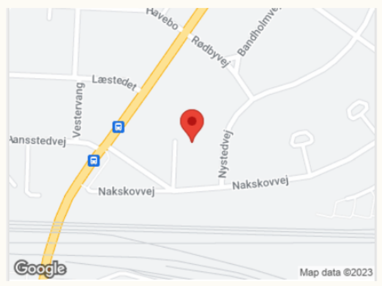

Individuel terapi 1 time, 800 kr.
Individuel terapi 1,5 time, 1150 kr.
Parterapi 1,5 time, 1400 kr.
Parterapi 2 timer 1800 kr.
Familieterapi 1,5 time, 1600 kr.
Unge og børn individuel terapi 1 time 700 kr.
Er du ID studerende kan du kontakt mig for at høre nærmere, eller hvis du er studerende,
på overførselsindkomst eller har henvisning fra lægen.
Ring 2328 7955,
for at høre om dine muligheder. Disse samtaler vil altid foregå mellem kl. 10 og 14.
Erhverv
For virksomheder og pensionskasser
Terapi eller coaching 1 time, 1150 kr
Terapi eller coaching 1,5 time, 1725 kr.
Afbud
Tak fordi du viser hensyn og melder afbud i god tid, da min praksis er sårbar overfor aflysninger.
For at få tiden genbesat og dermed gøre det muligt for mig at have en indtægt,
beder jeg dig melde afbud eller ændring af aftalen på telefon eller mail senest 24 timer før.
Det er ikke nok at sende en sms-besked. Ved udeblivelse eller afbud senere end 24 timer før aftalen,
betales
fuld pris.
Kontakt
For mere info kan du ringe på tlf: 23 28 79 55 eller skrive mail: marianne@moellekaer-terapi.dk
Online sessioner
Er en mulighed efter aftale og efter at vi har mødtes et par gange.
Sted:
Sakskøbingvej 8, 2500 Valby
Tæt på S-tog Danshøj og Hvidovre.
Bus 10 holder meget tæt på og kører mellem Rådhuspladsen og Brønshøj Torv.
Kom venligst tæt på den aftalte tid, da jeg ikke har venteværelse.
Jeg følger anbefalinger og retningslinjer vedr. Covid 19 og lufter ud og spritter af mellem sessionerne.
Vi kan holde god afstand i Klinikken.
Der er plads til at vi trygt kan være i rummet uden mundbind.
Parterapi og individuel psykoterapi i rolige omgivelser i Valby, tæt på Danshøj og Hvidovre station, samt bus til København og Vanløse. Hvis du har behov for en akut tid, kan du kontakte mig på telefon 23287955. Hvis du har behov for aften eller weekend tid må du også gerne kontakte mig for at høre om mulighederne. Der er tillæg for aften og weekend tider.
Møllekær Terapi
Sakskøbingvej 8
2500 Valby
+4523287955
Jeg er medlem af Dansk Psykoterapeut forening og ID-psykoterapeutforeningen.
Faglige fællesskab hvor vi holder os opdateret med kurser og nyeste viden.
I ID psykoterapeutforeningen er jeg medlem af Etisk råd.
Medlemmerne kan kontakte Etisk råd og drøfte etiske dilemmaer i en faglig og tryg ramme.
Jeg overholder etiske regler fra psykoterapeutforeningen og er derfor jævnligt i faglig supervision hos
Peter
Kofoed og
John Mortensen.